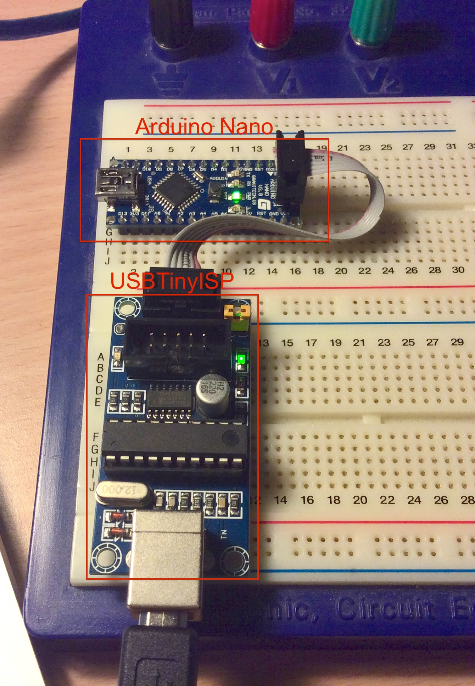
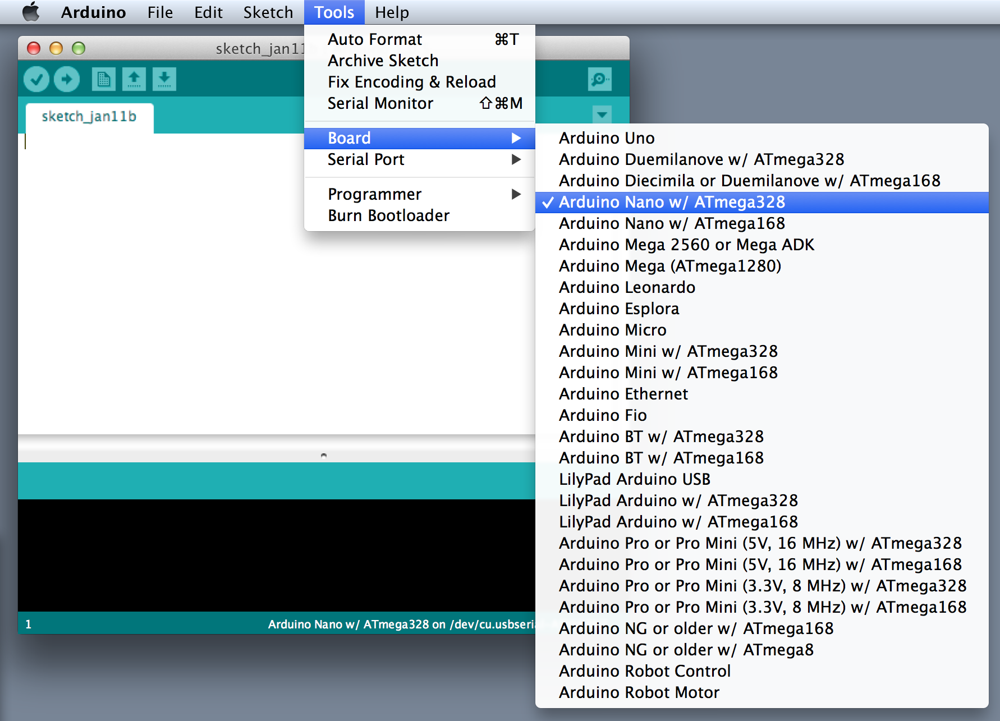
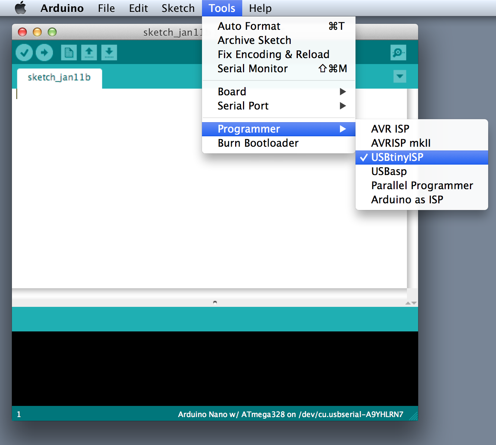
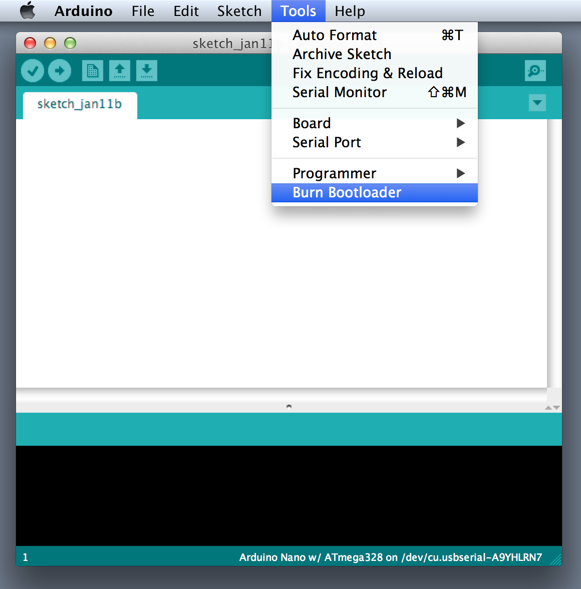
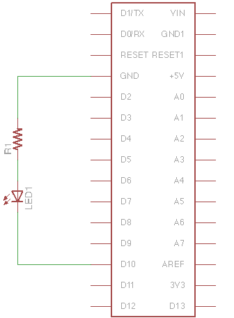
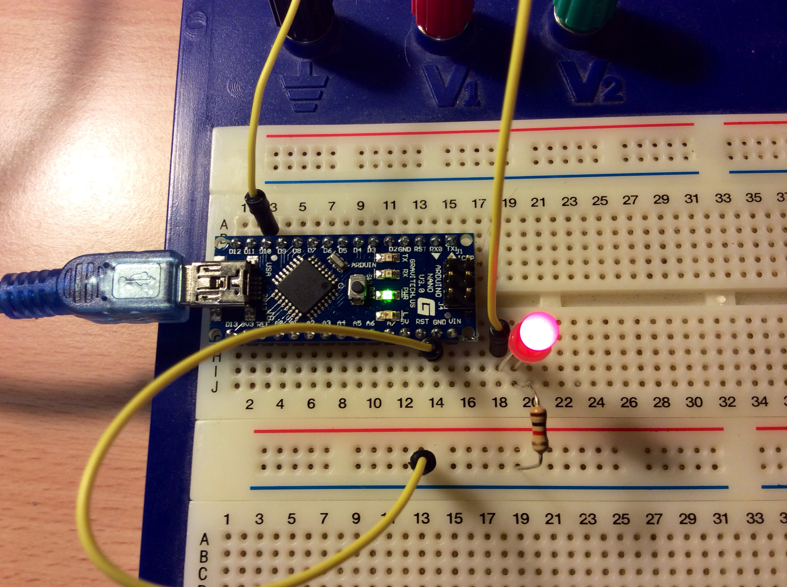

Here I'm not going to talk about what Arduino are, I assume you know that already, what I am going to do is show you how to do make an LED blink using the Arduino Nano and MacOSX.
Things you will need hardware wise:
Note: The USBTinyISP is very important, depending on where you buy your Arduino Nano, it may or may not have the Arduino Bootloader already burned into the Arduino Nano.
Software wise you have to download and install:
Note: The FTDI Chip driver is very important, without it you won't be able to communicate with the Arduino Nano.
The Arduino Bootloader is a small bit of code that allows you to transfer your Arduino Sketches (your chip program) into the Arduino without using an external programmer. This added convenience means you sacrifice ~2KB of space.
Assuming you have downloaded and installed Arduino IDE and the FTDI chip driver on your computer:
Note: You must not connect the Arduino Nano to the computer directly, the Nano can get its power from the USBTinyISP.

If you have connected everything correctly launch Arduino.app. In a new blank
sketch:
Tools > Board set board to be burned, in this case its the Arduino NanoTools > Programmer set programmer to USBTinyISPTools > Burn Bootloader burn the bootloader (This will take some
time)  
The ability to blink LEDs is really really simple, simply connect the circuit as follows:
 
Once you connected the circuit as pictured above, load the following code into
Arduino.app and press the "upload" button (or keyboard shortcut: Command +
U):
int led_pin = 10; # Digital Pin #10 is were the LED is connected to
void setup() {
pinMode(led_pin, OUTPUT);
}
void loop() {
digitalWrite(led_pin, HIGH);
delay(1000);
digitalWrite(led_pin, LOW);
delay(1000);
}
Note: Before you upload the code remember to set the serial port in Tools >
Serial Port to /dev/tty.usbserial-XXXXXX (or similar). This tells
Arduino.app to output through from the USB port. After the sketch has been
successfully loaded, the LED should blink as you programmed it.
What most Arduino Hello World tutorials don't tell you is why you require that 1kOhm resistor, the reason is to stabilise the LED and avoid too much current being drawn from Arduino Nano. The digital I/O on the Arduino Nano outputs 5V, and typically a LED forward voltage (voltage drop across the LED) is about 1.8 to 3.3V depending on the colour. And so the equation for the correct resistance is:
\begin{equation} R = \frac{ V_{\text{Power Supply}} - V_{\text{LED voltage drop}} } { I_{\text{LED current}} } \end{equation}
\begin{equation} R = \frac{5 - 1.8}{3 \times 10^{-3}} \end{equation}
\begin{equation} R = 1066.6 \text{Ohms} \end{equation}
The answer is a 1066.6Ohm or 1kOhm resistor is needed. :)